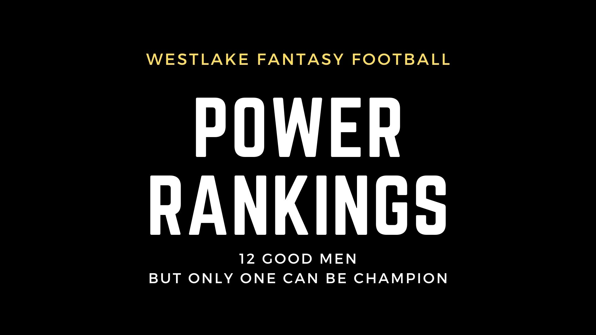

Deandre Swift isn't going anywhere
This picture is too sick not to leave for a while.
It has to be said, my team is so unbelievably bad at this point in the season I can no longer act like I know what you should all be doing with your teams. But, I hope, that I can still entertain you in a Matthew Berry sort of way, where everything I say ends up being wrong, but it's worth reading anyway because of an undeniable sense of humor, good looks, and overall just a handsome writer.
That being said, I didn't watch any football this weekend because I was too busy partying but I did manage to swing a major trade with Seif, and our Commisioner did an excellent job of pushing a 5:30 AM trade through before kickoff at 10AM. Not to mention he slid Javonte Williams into my empty RB2 slot because my phone was dying and I got off a last second text. Seriously, round of applause to Trevor. None of it mattered, but life is about games within games. Life is all about the meta. The game of all games. Our league is getting better, and although my team is getting worse, I would rather have a crappy team in a great league than vice-versa.
I've noticed a trend in trades this year. Correct me if I'm wrong but all trades seem to have one blockbuster player being traded for a player that isn't yet a star. Evans for Edmonds, Robinson for Ruggs, Barkeley for Waddle. Most trades are initiated by big names being offered from disappointed owners.
I'm excluding my Njoku trade because that was more about me just panicking with no fab trying to pick up a player I had just dropped. But I'm back in the mix with $50 fab and Javonte Williams at RB2 for Michael Thomas. Melvin Gordon is the better player and I maybe should have offered Michael Thomas for him first, but it's easier to trade with people you're getting drunk with, and so I highly suggest we all have a midseason trade deadline party each year. Go to Vegas or something. Our league is so sick, anything is possible. The rest of the fantasy world envies us. They aspire to be in a league as dope as our league.
Hats off to Ernie, Charlie, and Trevor for the best podcast in league history, making my long drive super entertaining. It's nice to put a face and voice to Charlie's team, and to hear Ernie's valuable strategy we can all steal for ourselves. Going into Sunday, Ernie had 4 possible spots he can put a Receiver. WR1 WR2 TE and Flex. He had Cooper Kupp, Jamar Chase, Travis Kelce and Debo Samuel. That's the Wr1 Wr2 Te1 and Wr3 in all of fantasy football, and he still lost. Trevor beat him. And that's just one of the many things that makes our league the best league on the internet. Westlake Fantasy Football League could aptly be renamed the "Legendary Fantasy Football League". or League of Legends, but that's taken. League of Extraordinary Gentleman? Damn, that's taken too. We'll stick with what we've got for now. Let's get into it. Don't forget to play the song, it's a banger.
6-2
Two Girls One Cupp - Ernie McMillan
Cooper Kupp has quite the stat log this season. Every single game has 10+ targets and 10+ fantasy points. He has 30+ fantasy points 4 seperate times already. He is the number 1 fantasy wide receiver which was broken by Chase, before Kupp got the chance to play in the afternoon. Oh and Debo Samuel? He used to be the 1 Overall, so basically Ernie's team is beyond comparison.
You can put 125 points against Ernie and still get blown out. I haven't seen a run this dominant in the history of our league. Sure, I had a good 10 team league with a great keeper, but this team is just unreal quality for a 12 team league.
Not only did he pick up and play Tua but Tua must have got the memo because he put up an overall QB1 Finish to help Ernie's team win another $50. Incredible. I'm honestly open to advice from Ernie. How the hell did you do this? How are you doing this?
After his first loss in what seems like Eternity, it's anyone's game again. But he still has an overwhelming advantage.
QB Tua Tagovaloa
-- QB1?RB Darrell Williams
-- nice cuffRB Darrel Henderson Jr
-- This offense is so good and the defense makes him run the ball with the lead. There's no denying the value here.WR Cooper Kupp
-- Unbelievable start to the seasonWR Jamar Chase
-- Looks so good I wish I drafted himTE Travis Kelce
- He's automaticWR Debo Samuel
-- Really good flexCan this team stay healthy? Because Darrel Henderson gets banged up a lot, and Debo Samuel runs like a man possessed and forgets to protect himself.
As it is though, this roster is almost impossible to stop.
5-2
Pathetic Incompetence - Devin Kazmer
Joe Burrow just showed the world what he can do
Devin, Devin Devin. Where do I begin? He's got Saquon Barkley for nothing. He put Van Jefferson in and got more than Waddle would have. But none of that matters in the face of starting Saquon Barkley with a zero RB team in the playoffs. Still could use a Tight End but easily one of the best teams in our league after the trade.
QB Justin Herbert
-- I bet Dkazz $5 Burrow outscores him on seasonRB Saquon Barkley
-- When!?RB Damien Harris
-- I think Harris is an every week play considering how lousy Davis and Sanders are right now. At least Harris has flashed.WR Davonte Adampants
-- Last Dance...WR DK Metcalf
--Dkazz Metcalf... I miss having him on my team.TE Evan Engram
-- Smart pickup and playWR Terry Mclaurin
-- Scary Terry doesn't like his own nickname. WR1 Problems.I'm not judging Tim. I also traded a superstar for a rookie. However, I went WR for RB. RB for WR, is borderline unforgivable. But I forgive you Tim. I forgive you.
4-2
Seifed by the Bell - Andrew Seif
Patrick Mahomes looks like he has bad mechanics now. This can happen to players who do thinks you just can't do. It's starts to become a problem. I can't say I like Kyler's mechanics either. Throw the fucking ball. Stop throwing off your back foot. Give me Rodgers, Brady, and Peyton Manning until they're dead.
Andrew swung a trade because he had fab to spend, an rb depth piece to sell, and a good record so he can wait for MT to become a thing.
Jameis tore his ACL but Michael Thomas is good with virtually any quarterback. It was a bad trade by me but then again I thought I actually had assets in Smith and Beckham instead of a combined 2 points from those guys.
Cordarelle Patterson is a fantasy miracle, I didn't even try to get him because he's so difficult to evaluate. I still don't believe it.
Seif's team, after the trade and this weekends performance, and a variety of nice assets, is a clear Tier 1 team with Ernie and Chris and Devin and Trevor.
QB Patrick Mahomes
-- too many turnoversRB Najee Harris
-- getting better and betterRB Joe Mixon
--Nobody dances in the endzone like JoeWR Ceedee Lamb
-- ElectrifyingWR Brandin Cooks
-- Terrible team, no Deshaun WatsonTE Mark Andrews
-- Not your average tight endWR Marquise Brown
-- Good player, great value4-4
Sandusky's Soldiers - Chris Kazmer
Chris Godwin finally went off
Say what you want about there being too many mouths to feed in Tampa Bay. With Gronk and AB out, Godwin and Evans deliver.
Mike Williams appears to have entered the Earth's atmosphere, after playing the first half of the season on the moon.
QB Dak Prescott
-- Having the whole Cowboy's offense is definitely niceRB Ezekiel Elliot
RB James Robinson
WR Stefon Diggs
WR Chris Godwin
TE Darren Waller
-- I had a dream Darren Waller put up unreal numbers. I think it might come true.WR Mike Williams
-- Wow... I got to see it in personGodwin proving why he's a must start. Diggs will heat up. Chris has Great Players on Great teams with the bills, cowboys, and bucs. Also the Chargers and Raiders give him some top-tier options in Waller and Williams.
A tier 1 team.
5-3
Commisioner Gordon - Trevor Goodwin
Trevor's team is squeeking by
Lamar Jackson and Tyreek Hill are extremely dangerous
This was a bad week for Trevor. Claypool and Jones both got 3 points and are total busts this year.
QB Lamar Jackson
-- Fantasy JesusRB Aaron Jones
-- will he wear those shades more often please?RB Elijah Mitchell
-- This backfield appears to be hisWR Tyreek Hill
-- insane in fantasy!!! Got double covered though.WR Amari Cooper
-- hit or missTE Tyler Higbee
-- I think he's lousyWR Robert Woods
-- Had a good game finallyThis team has Tyreek Hill and Aaron Jones and Amari Cooper, all of whom have had 40 point games. Gotta figure out the other parts of his roster though.
Not looking so hot after that performance, trev.
Tier 1.
3-5
Hurts so Good - Devon "Deandre" Silber
Jaylen Hurts is the QB2 on the year
Devon wonder's why he's rising in the power rankings despite losing. It's because I expected much worse. I cannot deny the effectiveness of Dalvin Cook / DeAndre Swift / Jaylen Hurts / And your ppr guys. Hurts finally had a bad fantasy day but the Eagles scored 40+ points so if they keep that up he should get you 30 next week. I don't know how he gets 100 passing in the NFL seemingly every week but Devonta Smith is getting barely any receptions and it's all just Jalen Hurting my brain to even evaluate this team.
QB Jalen Hurts
- Jalen Hurts my brain!!!! Worst Game ever = 25 pointsRB Dalvin Cook
-- He's annoyingly goodRB Deandre Swift
-- Probably my favorite young player right nowWR Keenan Allen
WR Diantae Johnson
--Does not finish the game JohnsonTE Dallas Goedert
-- The $100 dollar man needs to borrow some money.RB Josh Jacobs
Playoff bound
Notable Bench Players:
Alexander Mattison
4-2
Dads are Back in Town - Justin Silber
Justin's team is funy. On the one hand he's smart enough to acquire Mike Evans for not a lot, let's face it.
On the other hand he thinks drafting and playing Ryan Tannehil is a good idea, lmao.
That 18 points from Hubbard is very key when your guy McCaffery goes down. That's an example of genius Justin. Justin is like a fool with a genius mind, or a genius with a fools mind. I actually relate to that. It's not easy being clever. If it was easy, everyone would do it, as Tyrion said in Game of thrones about being drunk.
Montgomery being out is really not his fault, and the fact that he plugged in Pollard and got 14 is really impressive, even though Gaskin got 30+ randomly.
DJ Moore had an off week, but that's to be expected when you're relying on Sam Darnold.
This team has potential but has a glaring hole at quarterback and no path I can see to filling it. It's very clearly not a Tier 1 team and I put it in Tier 2 as in noticably worse than the other teams in Tier 1.
If this teams get's his RB's back healthy and finds a solution at QB, it could be a tier 1 team.
QB Ryan Tannehil
-- I think big days are ahead as teams focus on stopping the run and with the reemergence of AJ Greatest player of all time Brown.RB Christian McCaffery
-- uh ohRB David Montgomery
-- Justin's team will be a lot better when his RB's come back but maybe this just isn't their year.WR Justin Jefferson
- Jefferson should steal back the spotlightWR DJ Moore
- Same Old Darnold.TE Mike Gesicki
-- Balling outWR Mike Evans
-- Hat Trick Mafia! What's that? Idk, but I just made it up and Mike Evans is a member.Notable Bench Players
WR Jarvis Landry
- - What a bossIs CMC going to revitalize this putrid Carolina Offense?
Time will tell for this Tier 2 team
4-4
Afghanistan the Taliban - Tim Brennan
Tim's team is on the up and up.
Great week from Tim, living up to Tom Brady's standards finally.
Great job with Fournette this week. The Brady/ Fournette combo is super valuable right now because at least one of them explodes when the Bucs offense is putting up 35 points per game.
QB Tom Brady
- GOATRB Saquon Barkley
- ankle!RB Chase Edmonds
- whoopsWR Deandre Hopkins
-where has he beenWR Allen Robinson
-- oh noTE Noah Fant
WR Adam Thielen
-- oh no!Interesting trade to aquire Edmonds on an explosive offense with Kyler Murray.
Hopkins and Theilen back in business, and Mike Evans had a rough week on someone else's team. Nice job, tim. I'm proud of you.
3-5
Obi-Wan Jakobi - Sven Svennefiord
Sven's not paying attention
Even in PPR leagues, Henry is a fantasy monster. Sven will struggle to replace him as will the Titans, even with AD.
When he was a rookie, I knew this would happen if they just gave him the rock and built the team around him. Because he's such an NFL running back. He's just a man amongst boys. And he belongs as the centerpiece of a punch you in the mouth offense that beats you by demoralizing you slowly and then taking your head of like a Mortal Kombat fatality.
They showed a graphic during the Monday Night Game and it showed his YPC this season by quarter. It starts at 2 yards per carry and then doubles each quarter. By the 4th quarter he's averaging 8 yards a carry and putting away close games.
The only way to stop him is to blow them out in the first half.
QB Matthew Stafford
RB Derrick Henry
-- 3 TDs, 29 carries.RB Chris Carson
-- Always hurt, and Sven didn't pickup Rashad Penny with Collins listed as questionable.WR Brandon Aiyuk
-- Coming off the bye should be more involvedWR AJ Brown
-- Big 2nd halfTE Kyle Pitts
-- Pitts finally went offWR Leviska Shenault
-- I feel bad for Sven that he has to start a Jaguar.Sven lost by one this week to a Byepocalypse Chris, because he started Sterling Shepherd who was questionable and ended up not playing, All Sven had to do was throw in anyone else and he would have won. These wins matter a lot. You can put up 130 and still lose. You have to grab the W when you're opponent has all his players on BYE. Power rankings factor in the skill of the players but also of the manager. Sven clearly is not committed to winning a fantsy title, and therefore it will elude him.
3-5
Team Eight - Michael Mckenna
Michael's team was outmatched outclassed and outgunned by Ernie's team this week
Austin Ekeler is of course responsible, back to his overrated ways, just when you think you can trust him, he goes on BYE and leaves you to pick up the pieces.
Although I said Swift was great in a bad situation, Gibson's production has to concern you. Is it injury? Is it him? Is it the QB? Consecutive terrible games from your early second round pick is not good at all.
QB Aaron Rodgers
- MVP, still has AdamsRB Antonio Gibson
- 7 points!? Raise the alarmRB Austin Eckeler
- Was on BYE! What a loserWR Tee Higgins
-- Made Big plays but only got 13 fantasy points.WR Tyler Lockett
-- I could have told you this wasn't going to work without Wilson.TE George Kittle
-- I think he's hurt with 0 points.Nice job with Zach Ertz, of course when I pay 25 dollars for him he gets me one point but then he immediately skyrockets in value when I drop him.
Lockett's gonna be really really bad, and Tee Higgins just isn't cutting it this year. I don't know how I pulled off the semis with Higgins and Aiyuk last year. They are awful this year.
With Rodgers, Ekeler and Gibson you have a nice start to a great team but your wide recievers are wack. Your depth is uninspiring, and you should be dealing a Zach Moss or a Singletary to an RB-needy team in exchange for upside wide recievers like Kadarius Toney. And why is he on my team? He should be on your team. You need to drop average bench players and hold onto lottery tickets if you ever want to have a great team.
I'm sorry.. I don't hate you. I just hate your team.
I could honestly rank my team at dead last but I think my team has better long-term prospects then these teams below me if my team gets healthy.
Tier Awful
2-6
Coronel Mustard's Myster Men - Charlie McMillan
Charlie's team got the Dub!
The importance of picking up Ernest.
QB Josh Allen
- Allen is a beast, man.RB Jonathan Taylor
- Jonathan Taylor is looking better each week and is a fantasy powerhouse.RB D johnson
WR Calvin Ridley
-- Ridley bounced back but only scored 12 points.TE TJ Hockenson
- -lameJosh Allen dropped 30 on me and Kyler couldn't even get 10. Guess Charlie was right to select Allen. Still, less than 100 Points ain't going to cut it most weeks.
Tier Awful
2-6
The Disaster - Max Jann
K yler Murray is ashamed to be on my squad
I have gone from the Developer to the Disaster, because I didn't draft enough RB Depth and then I had two catastophic RB injuries.
I traded away my ace in the hole Michael Thomas, to try to squeek out a win vs. Charlie, and I still lost in a blowout. My team is living up to it's name. The Disaster. Might change it to "The Dumpster Fire" if this continues.
QB Kyler Murray
-- LoserRB Alvin Kamara
-- WinnerRB Javante Williams
- I don't even love him that much I just was so desperate. - direct quote from my ex girlfriendWR Antonio Brown
-- on crutchesWR Devonta Smith
-- Jaylen Hurts made only 1 NFL throw last game and it was a Dig route to Devonta. Do it more Jaylen. All you do is run on every single damn play.TE Rob Gronkowski
-- I don't know man, will he play?WR Kadarius Toney
-- I don't know what to expect from this guy but he certainly is giving me OBJ rookie year vibes and moves like no one I've even seen with this weird jab step dead leg that defenders fall for every time.The reason the Eagles don't run is that every time they call a pass play it turns into Jaylen Hurts running for 1 yard out of bounds, barely getting the corner or throwing it at the last second to a double covered receiver. He's HORRIBLE. Super frustrating landing spot for such a stud young WR.
Notable Bench Players:
Michael Thomas
-- A holeTrevor Lawrence
-- I think he's decentOdell Beckham Jr.
-- Very frustrating fantasy option.I was going to move my team way down but Kamara messed around and put up a WR1 day at RB.
I say my team is Tier 4 right now just because it has serious problems at RB.
Tier Disaster
Thanks for reading !